Système d'attaque et composition de l'armée
Système d'attaque et composition de l'armée
Cette article a pour but de vous donner des pistes pour attaquer un adversaire au cours d'une guerre, en fonction de son niveau et du vôtre.
Cependant, il faudra veiller à adapter son attaque à la base adverse.
Attaquer un village HDV 7 HDV 8 HDV 9 HDV 10
 Attaquer un HDV 7
Attaquer un HDV 7
Défense d'un HDV 7
| Nombre | Bâtiment | Niveau max |
|---|---|---|
| 5 | 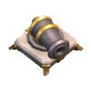 | 8 |
| 4 | 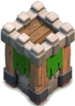 | 8 |
| 3 | 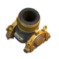 | 5 |
| 2 | 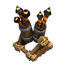 | 5 |
| 2 | 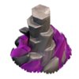 | 4 |
| 2 | 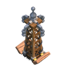 | 3 |
| 1 | 3 |
| Nombre | Bâtiment | Niveau max |
|---|---|---|
| 175 | 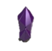 | 7 |
| 6 | 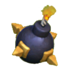 | 4 |
| 4 | / | |
| 1 | 1 | |
| 2 | 3 | |
| 2 | 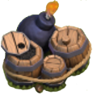 | 2 |
| Héros | Niveau max |
|---|---|
| 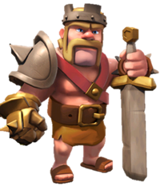 | 5 |
Stratégie d'attaque
Technique : À ce niveau, le village attaqué ne possède que 2 défenses anti-aériennes et elles ne sont qu'au niveau 5 max. La stratégie la plus simple et qui fonctionne à tous les coups est de partir avec une compo full dragon et au moins trois potions de foudre.
Au début de l'attaque, balancez vos trois potions de foudre sur l'une des 2 défenses anti-aériennes (de préférence sur celle qui a le niveau le plus élevé ou alors celle qui est la plus difficile à atteindre) pour la détruire. N'essayez pas de détruire un autre bâtiment en même temps, concentrez-vous sur une seule défense anti-aérienne (AA). En effet si une des 3 potions ne tombe pas au bon endroit la AA ne sera pas détruite.
Une fois ce travail fait, il vous suffit de lancer tous vos dragons au plus proche de la AA restante. En fonction de la base adverse, lancez quelques dragons à l'autre extrémité de la base pour vous assurer que les dragons auront le temps de tout raser.
Normalement, cette technique vous assurera un 100 % sur la base adverse.
Attaquer un HDV 8
Défense d'un HDV 8
| Nombre | Bâtiment | Niveau max |
|---|---|---|
| 5 | 10 | |
| 5 | 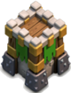 | 10 |
| 4 | 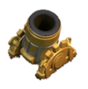 | 6 |
| 3 | 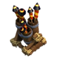 | 6 |
| 3 | 6 | |
| 3 | 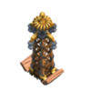 | 6 |
| 1 | 4 |
| Nombre | Bâtiment | Niveau max |
|---|---|---|
| 225 | 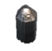 | 8 |
| 6 | 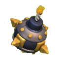 | 5 |
| 6 | / | |
| 2 | 1 | |
| 4 | 3 | |
| 3 | 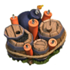 | 3 | 2 | 2 |
| Héros | Niveau max |
|---|---|
| 10 |
Stratégie d'attaque
L'attaque aux cochons sur un HDV 8 ou 9
L'attaque aux cochons est une attaques bien plus rentable que la technique du full dragon mais celle ci nécessite un gros apport d'élixir noir dans la recherche car les cochons doivent être au moins de lvl 4 voir 5 si vous êtes HDV 9. Ce type d'attaque nécessite par contre un peu plus de savoir faire que le simple full dragon avec potion de rage/soin ou foudre, mais assure un 100% si le guide est bien respecté.
Le plus optimal est de garder une potion de soin pour chaque déclenchement des pièges à grosses bombes.
Lors des GdC les châteaux sont en général remplis et pour ce type d'attaque il faut impérativement vider tout le CdC, sinon c'est le fail assuré.
Pour ca, avant d'attaquer, il faut localiser le cdc et savoir si l'on peux faire sortir les troupes avec un barbare
Si cela n'est pas possible prendre un cochon qui ira se sacrifier contre une défenses dans la zone du cdc pour faire sortir les troupes.
Dans les deux cas de figure il faut s'assurer que le cdc est bien vide donc renouveler l'opération obligatoirement une seconde fois voir une troisième si l'on pense que le château n'est pas vide. Pour les hdv 8 perdre 3 cochons semble être énorme mais mieux vaux perdre un cochon de plus que de lancer l'attaque alors qu'il reste une troupes dans le CdC qui aura tout le temps de détruire les cochons car ceux ci ne vont pas se défendre.
Une fois toutes les troupes du CdC sorties, il faut les attirer dans un lieu isolé (à distance des défenses) pour leurs tendre une embuscade. C'est pour cela que vous aurez besoin d'environ 5 barbares pour temporiser l'attaques des troupes ennemies et de quelques mages ou autres unités de dégât à distances pour détruire le plus vite les troupes (n'hesitez pas à utiliser votre roi). Une fois les troupes ennemies détruites le carnage aux cochons peut enfin commencer.
Il faut choisir un lieu de pop unique et lancer tous les cochons au même endroit en un minimum de temps. En général c'est le même endroit où il y a eu l'apparition des mages pour détruire les troupes du CdC adverses. Une fois les cochons lancés vous avez le temps d'envoyez vite les héros et préparez vous à soigner vos cochons.
Les cochons, comme dit plus haut, sont assez fragiles et nécessiteront toute votre attention une fois lancés. Cela implique un bon positionnement des potions de soin car si celle ci sont posées exactement sur eux, elles n'auront pas le temps de les soigner entièrement car ils se déplacent très vite. Il faut donc anticiper leurs futurs déplacements et lancer la potion dans la direction où ils vont aller pour que la potion soit efficace.
Si tout se passe bien vos cochons vont raser en un temps record toutes les défenses de l'ennemi. Pendant ce temps, vos héros et les mages auront eu le temps de raser la plupart des bâtiments restants, ce qui laisse largement le temps aux cochons restants de finir entièrement la carte pour obtenir un 100%.
Composition pour un HDV 834 cochons + 6 mages + 6 barbares + CdC(mages+archères) + 3 potions de soins
Si vous voulez des cochons lvl 5 dans votre CdC, spécifiez le dans la demande et la compo sera différente:
30 cochons + 11 mages + 6 barbares + CdC(cochons) + 3 potions de soins.
38 cochons + 6 mages + 6 barbares + CdC(mages+archères) + 4 potions de soins
Si vous voulez des cochons lvl 5 dans votre CdC, spécifiez le dans la demande et la compo sera différente:
34 cochons + 11 mages + 6 barbares + CdC(cochons) + 4 potions de soins.
Attaquer un HDV 9
Défense d'un HDV 9
| Nombre | Bâtiment | Niveau max |
|---|---|---|
| 5 | 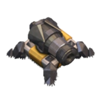 | 11 |
| 6 | 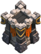 | 11 |
| 4 | 7 | |
| 4 | 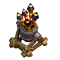 | 7 |
| 4 | 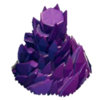 | 7 |
| 4 | 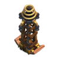 | 7 |
| 2 | 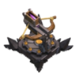 | 3 |
| 1 | 5 |
| Nombre | Bâtiment | Niveau max |
|---|---|---|
| 250 | 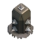 | 10 |
| 6 | 6 | |
| 6 | / | |
| 4 | 2 | |
| 4 | 4 | |
| 4 | 3 | 2 | 3 |
| Héros | Niveau max |
|---|---|
| 30 | |
| 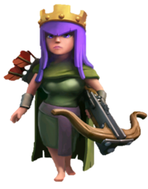 | 30 |
Stratégie d'attaque
L'attaque aux cochons
Voir L'attaque aux cochon sur un HDV 8 ou 9
GoWiWi - Golems Wizards Witches // Golem Mages Sorcières
1. Dans quelle circonstance ?Cette composition doit être utilisée sur les bases espacées. Tout le contraire d'une attaque aux cochons, où la base doit être bien compacte.
En effet, de l'espace induit des pièges et par conséquent il va falloir être capable de survivre à ces pièges. Les squelettes invoqués par les sorcières vont alors servir de chair à canon.
Ce type d'attaque permet d'assurer, si bien préparée, 2 étoiles relativement facilement sur les Hôtel de Ville 9 (HdV).
En général, 2 Golems seront amplement suffisants.
Ensuite, suivant la base que vous allez attaquer, vous aurez besoin de plus ou moins 10 à 14 sapeurs. Comptez-en 2 pour péter un compartiment. Pensez qu'il peut y avoir des pertes. Ils sont essentiels pour une progression rapide jusqu'à l'HdV.
Pour les sorcières partez sur une base de 4, de préférence niveaux 2. Suivant votre ressenti vous pouvez augmenter ou non l'effectif.
Enfin, complétez avec des mages.
Alternative avec le vidage de Château de Clan (CdC) ennemi, si accessible.
Réservez de la place pour 2 cochons/ballons et 2 à 3 barbares afin de leurrer le CdC ennemi.
Concernant le CdC, vous pouvez demander soit 2 sorcières, soit un PEKKA. Si vous disposez de 30 places et que vous trouvez vos golems trop faible, demandez-en un de niveau supérieur. Vous pourrez alors utiliser les 30 places libérées pour produire soit des mages ou des sorcières.
4. Quels sorts ?On partira au minimum avec 2 sorts de rages.
Suivant les circonstances, les deux autres potions dépenderont de l'agencement de la base.
Une potion de Foudre si le CdC ennemi n'est pas accessible pour le vider.
Une potion de saut si vous n'êtes pas encore trop confiant dans vos sapeurs. Cette potion de saut devra être utiliser le plus "tard" possible pour rejoindre le coeur de la base. Cet à dire le compartiment avec l'HdV.
Si l'accès à l'HdV vous semble simple, partez sur 3 sorts de rages.
Si le CdC ennemi est vidable, faîtes le. Si possible aussi essayez de leurrer le Roi Barbare et la Reine des archères s'ils sont vraiment en périphérie. Pas la peine de vous attarder dessus. Faites en sorte d'amener les troupes ennemis à l'endroit où vous voulez lancer l'offensive. On attaquera là où le chemin semble le plus simple jusqu'à l'HdV. En général dans un des coins de la base.
Attaquer un HDV 10
Défense d'un HDV 10
| Nombre | Bâtiment | Niveau max |
|---|---|---|
| 6 | 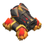 | 13 |
| 7 | 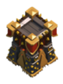 | 13 |
| 4 | 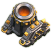 | 8 |
| 4 | 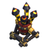 | 8 |
| 4 |  |
8 |
| 4 | 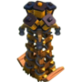 | 8 |
| 3 | 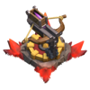 | 4 |
| 2 | 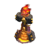 | 3 |
| 1 | 6 |
| Nombre | Bâtiment | Niveau max |
|---|---|---|
| 250 | 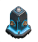 | 11 |
| 6 | 6 | |
| 6 | / | |
| 5 | 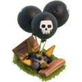 | 3 |
| 5 | 4 | |
| 5 | 4 | 3 | 3 |
| Héros | Niveau max |
|---|---|
| 40 | |
| 40 |
Par Gnodoum et BenWayne le 29/03/2015